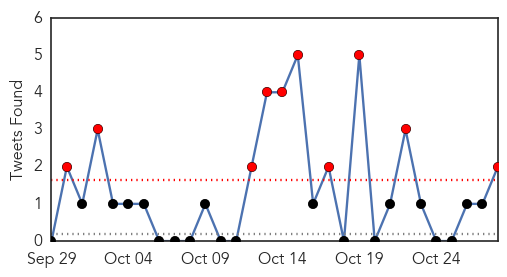
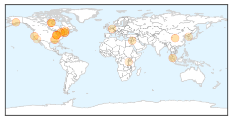

Cholera
30-Day Web Trend
5 alerts, 0 warnings

30-Day Twitter Trend
11 alerts, 1 warnings

Article Locations

Article Confidences
Top Articles:
- 0.993
- Cholera spreading in Iraq, suspected case reported in Syria: WHO
- 0.993
- Cholera spreading in Iraq, suspected case reported in Syria UN health agency
- 0.992
- Cholera spreading in Iraq, suspected case reported in Syria: WHO
- 0.990
- Cholera fears for Iraq and Syria
- 0.986
- Cholera resurfaces in Mozambique
- 0.985
- U.N. targets thousands in vaccination drive against cholera in Iraq
- 0.985
- U.N. targets thousands in vaccination drive against cholera in Iraq
- 0.977
- U.N. targets thousands in vaccination drive against cholera in Iraq
- 0.927
- Cholera spreading in Iraq, suspected case reported in Syria – UN health agency
- 0.863
- Prime Minister Blames Uganda’s Poverty on Malnutrition
- 0.820
- Aftermath of Flooding Affects Freetown, Sierra Leone - Sierra Leone
Top Tweets:
- 0.691
- RT: .@UN isn't a beacon for 900,000 Haitians infected by UN's cholera. @BanKimoon_amdg stand up for justice in Haiti ht…
- 0.666
- WHO mobilizes 510,000 doses of oral cholera vaccine to help control the outbreak in Iraq https://t.co/xCWQ6mmwo6 https://t.co/2mvyiUCTww
- 0.642
- RT: .@BeaLindstrom speaks to packed & transfixed audience on suing the U.N. for the 2010 Haiti cholera outbreak htt…
Influenza
30-Day Web Trend
6 alerts, 6 warnings

30-Day Twitter Trend
0 alerts, 0 warnings

Article Locations
Article Confidences

Top Articles:
- 0.999
- State health officials announce first Indiana influenza death of 2015-16 season
- 0.998
- State health officials report first Influenza death in Indiana this flu season
- 0.996
- Confirmed flu cases up in Durham since 2014
- 0.994
- Yolo county health officials urge people to get flu vaccines
- 0.993
- Flu shot season has arrived – Manitoulin Expositor
- 0.993
- State health officials confirm first Flu-associated death this season in Indiana
- 0.987
- Post flu shot selfies
- 0.986
- Rapid temperature changes and the exchange of germs make sickness vibrant this cold and flu season
- 0.986
- Flu Awareness Campaign
- 0.985
- Avoid two sick weeks, get a flu shot
- 0.975
- AstraZeneca launches new FluMist® Quadrivalent flu vaccine for this flu season
- 0.901
- Doc: Hard to prove cause of symptoms - Nation
- 0.865
- Vt. Health Department encourages flu shot selfies
- 0.854
- Deadly bird flu flying south for winter
- 0.847
- Today's stories from newspapers in Muskoka Region
- 0.810
- Spread of unknown dog illness in Orangeville raises new flags across Ontario
- 0.800
- Today's stories from newspapers in Ottawa
- 0.800
- Today's stories from newspapers in Ottawa
- 0.800
- Today's stories from newspapers in Ottawa
- 0.787
- Today's stories from newspapers in Orangeville
- 0.751
- October 28, 2015 Archives
- 0.691
- Seoul tightens regulations on postnatal centers
- 0.628
- Nov. 14: Castaic Library to Host Flu Vaccine Clinic
- 0.587
- News in Brief 28 October 2015 (PM)
Top Tweets:
-
No tweets found for Oct 28, 2015